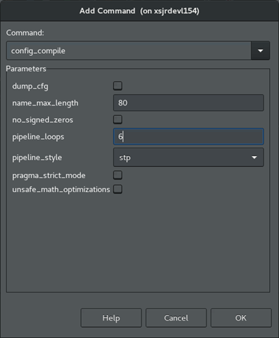
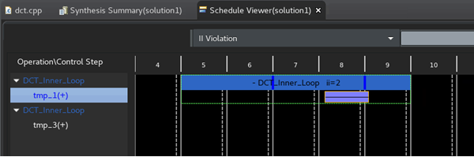
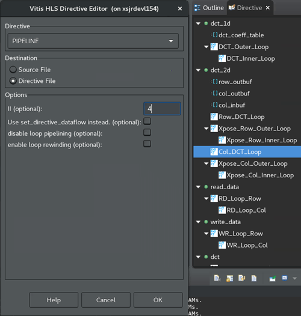
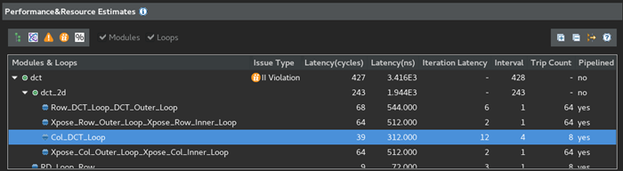
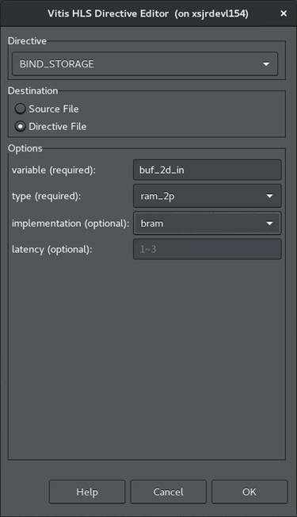
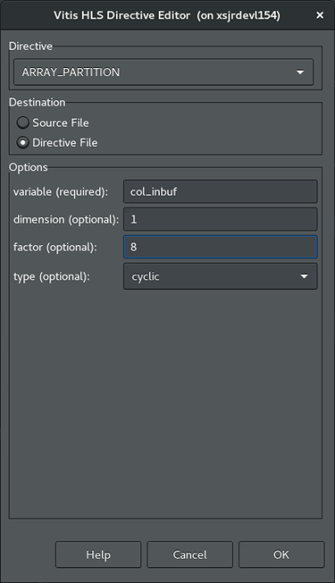
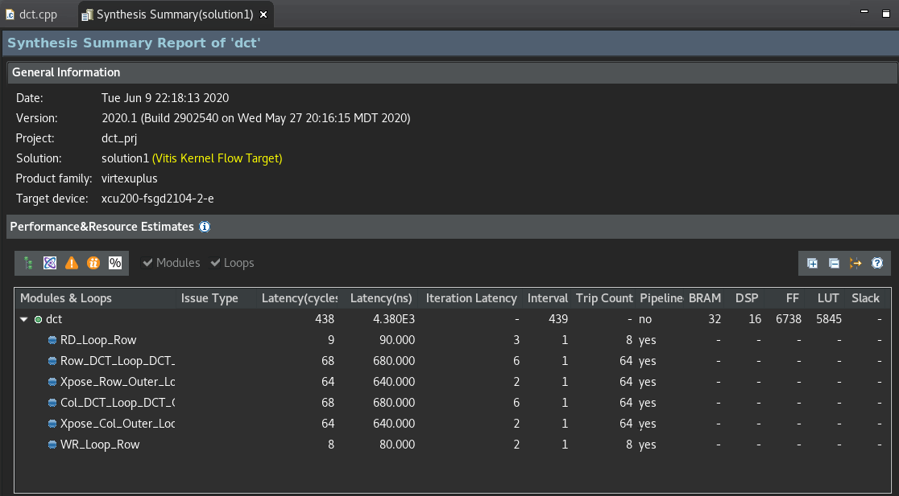

2020.1 Vitis™ Application Acceleration TutorialsSee 2019.2 Vitis Application Acceleration Development Flow Tutorials |
3. Using Optimization Techniques¶
This lab discusses various optimization techniques that you can try to reconcile the II violation from the Running Simulation and Synthesis lab.
Configure the Pipeline Loops Threshold¶
IMPORTANT: Remember, the violation is reported as a result of the tool trying to pipeline the small loops in the design. If you disable the automatic pipelining of the loops, the tool will no longer report a violation.
Review the Synthesis Summary report; you will see that the two II violations occur in loops with 64 and 8 iterations (tripcount) respectively. Setting config_compile to 6 should eliminate these loops from the optimization.
In the Explorer view, right-click the project solution, or
solution1, and select Solution Settings. This opens the Solution Settings dialog box.Select the General setting, and click Add to add the new setting.
In the Add Command dialog box, make the following selections:
For Command, select config_compile.
For pipeline_loops, enter
6. This indicates that the tool should only automatically pipeline loops with six or fewer iterations.
Click OK. You are returned to the Solution Settings dialog box.
Click OK to add the
config_compilecommand to limit the automatic loop pipelining as specified.From the toolbar, click C Synthesis to rerun the synthesis command and display the results.
This configuration appears to reduce the II violation from four cycles to two cycles. It has not completely resolved the problem.
This configuration might be an acceptable response to the II violation when the loops are not in the critical path of the design, or they represent a small problem relative to some larger problems that must be resolved. In other words, not all violations need to be resolved, and in some cases, not all violations can be resolved. They are simply artifacts of performance.

TIP: Back out the change before proceeding, right-click on the solution. Select Solution Settings command, and remove the config_compile command you just added.
Configure Pipeline Latency¶
Another possible optimization solution is to tell the tool that the latency of four or two clock cycles is acceptable performance. This eliminates the warning because the latency would match your specification. The overall latency of the application indicates that perhaps II=4 for these loops is not really a problem.
In the last section, the config_compile command is a tool configuration command that affects the compilation of the whole design. This optimization is a code directive to apply to a specific portion of the source code rather than to the tool itself.
Open the Source Code Editor for the function.
This can be done from the Explorer view by expanding the
Sourcefolder for the project, and double-clicking on thedct.cppfile to open it.With the Source Code Editor open, the right hand of the IDE also displays the Outline and Directive views for your code.
Outline view: Displays an outline of the open source code file for quick navigation of the code.
Directives view: Select operations or elements of your code to assign
HLS pragmasto your source code, or to assignset_directivecommands to a Tcl script that is associated with the active solution. For more information, refer to Adding Pragmas and Directives in the Vitis HLS FLow of the Vitis Unified Software Platform Documentation (UG1416).
In the Directives view, in the
dct_2dfunction hierarchy, right-click Col_DCT_Loop, and select Insert Directive.The Vitis HLS Directive Editor is displayed.

For Directive, select the Pipeline directive.
For Destination, select Directive File. This is the default.
Directives let you create different solutions, with different directive files to optimize performance in different ways, and find the best solution. With HLS pragmas added directly into the source file, all solutions have the same optimizations.
However, late in your design process it is worth changing the settled optimizations from the directive file to the HLS pragmas in your C/C++ code, so the optimizations become part of your code. You will do this later in this tutorial.
In the II field, enter
4. This should accept the current performance, and eliminate the II violation.Click OK to apply the directive. The HLS PIPELINE II=4 added to the Directive view.
Click C Synthesis to rerun synthesis.
The II violation for the specified operation is no longer reported. Notice the Interval column still reads 4. It is no longer not reported as a problem.

TIP: Back out the change before proceeding. Select the source code tab to make it active and display the Directive view. Right-click HLS PIPELINE II=4 and select Remove Directive. Rerun synthesis.
Assign Dual-Port RAMs with BIND_STORAGE¶
Examine the DRC Warning messages in the DRCs view. The message Unable to schedule load operation... indicates a load/load (or read/read conflict) issue with memory transactions. In this case rather than accepting the latency, you are going to try to optimize the implementation to achieve the best performance (II=1).
The specific problem of reading or writing to memory can possibly be addressed by increasing the available memory ports to read from, or write to. One approach is to use the BIND_STORAGE pragma or directive to specify the type of device resource to use in implementing the storage. BIND_STORAGE defines a specific device resource for use in implementing a storage structure associated with a variable in the RTL. For more information, refer to BIND_STORAGE in the Vitis HLS Flow of the Vitis Unified Software Platform Documentation (UG1416).

Select the dct.cpp tab to make the Code Editor active.
In the Directives view, right-click on the
col_inbufvariable in thedct_2dfunction, and select Add Directive.This displays the Vitis HLS Directive Editor.
For Directive, select BIND_STORAGE.
For Destination, select Directive File.
In Options, the variable you selected is listed. Specify the type of memory to use for the variable as dual-port RAM (
ram_2p).You can optionally specify the implementation and the latency. Leave them blank for now.
Click OK.
Repeat the process for the the
buf_2d_outvariable of the top-leveldctfunction.In the Directive view, select the
buf_2d_outvariable and add the BIND_STORAGE pragma to specify the dual-port RAM (ram_2p).
Click Run C Synthesis to rerun synthesis to see the results.
The results show that the to help resolve the II violation was not resolved. It looks like more than two ports are needed to be able to achieve an II of 1.
TIP: Back out the change before proceeding. Select the Source Code tab to make it active and display the Directive view. Right-click on HLS BIND_STORAGE pragmas and select Remove Directive. Rerun synthesis if needed.
Assign an Array Partition¶
Another approach to solve the memory port conflict for the pipelined loop iterations, is to use the ARRAY_PARTITION directive to reconfigure the structure of the array.
ARRAY_PARTITION lets you partition an array into smaller arrays or into individual registers instead of one large array. This effectively either increases the amount of read and write ports for the storage or removes the memory entirely, and can potentially improves the throughput of the design. However, ARRAY_PARTITION also requires more memory instances or registers, and so increases area and resource consumption. For more information, refer to ARRAY_PARTITION in the Vitis HLS Flow of the Vitis Unified Software Platform Documentation (UG1416). If partitioning large arrays, this can also increase the compile time.
In the Directives view, select the array variables, col_inbuf and buf_2d_out from the associated II violations.
Right-click and select Add Directive.
This opens the Vitis HLS Directive Editor as shown in the following figure.

In the Vitis HLS Directive Editor, make the following selections:
For Directive, select ARRAY_PARTITION.
For Destination, select Directive File.
In Options, the variable you previously selected should be listed. 1.Leave the dimension set to 1, the default value.
Specify a factor of 8.
Select cyclic for the type.
Click OK to close the form, and apply the directive.
Repeat the steps above for the
buf_2d_outvariable.Click C Synthesis to rerun the synthesis to see the results.
The results show that this optimization resolves the II violation, as shown in the following figure, while preserving the loop pipeline and performance improvements.
Re-examine the Synthesis Summary report to see the details of your synthesized design.

The reason for choosing a cyclic partition with a factor of 8 has to do with the code structures involved. The loop is processing an 8x8 matrix, which requires taking eight passes through the outer loop, and eight passes through the inner loop. By selecting a cyclic array partition, with a factor of 8, you are creating eight separate arrays that each get read one time per iteration. This eliminates any contention for accessing the memory during the pipeline of the loop.
Next Step¶
Now that you have resolved the optimizations for the specific issues in the design, there is one more optimization. You will be using the DATAFLOW optimization.
Return to Main Page — Return to Start of Tutorial
Copyright© 2020 Xilinx